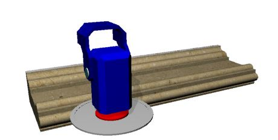

Machine technical documentation Operational document
The two machining profiles are Linear and Curved:

Linear Profile
For linear profiles, users can choose whether to perform the machining operation with the blade vertical or horizontal (from the front or from the left).
Vertical Orientation | Horizontal Orientation |
 |  |
Curved Profile
For curved profiles, the orientation is determined by the profile type:
Machining type | Vertical Orientation | Horizontal Orientation |
Concave |  |  |
Convex |  |  |